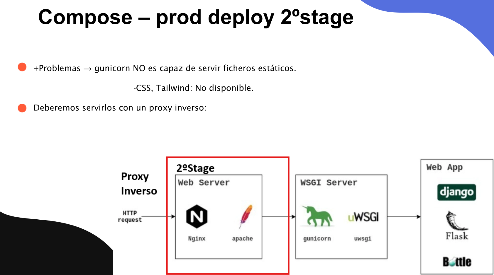
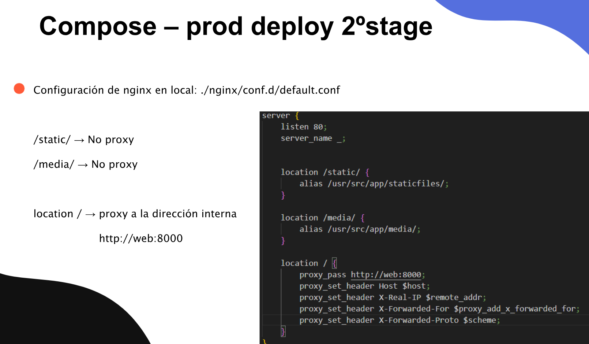
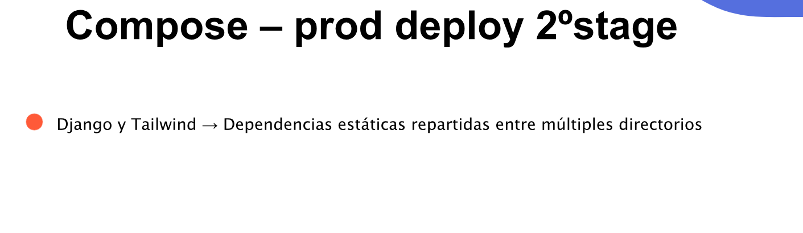
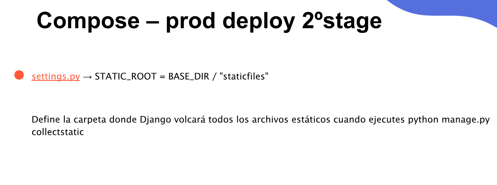
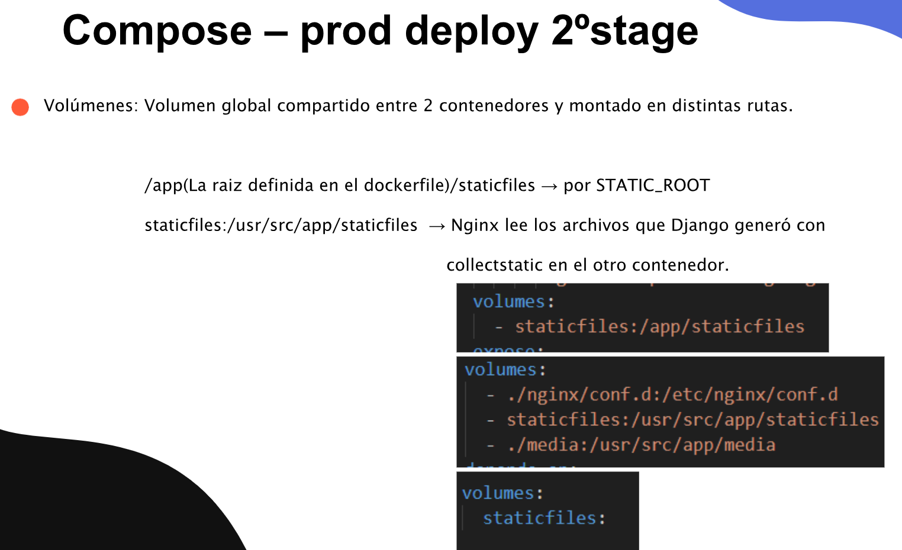

DAPW · Tarea
COMPOSE -- PROD STAGE 2
Instrucciones
Amplía la entrega de Prod Stage 1 del blog que Laura hizo con Lidia en Backend de segundo de DAW. En esta tercera y última etapa conservas Gunicorn y Django e incorporas Nginx como proxy inverso y servidor de archivos estáticos y multimedia.
Objetivo de esta etapa
Completa la parte recuadrada en rojo en el esquema: Nginx recibe las peticiones del navegador, sirve directamente los archivos de /static/ y /media/, y envía las peticiones de la aplicación al servicio interno web:8000.

Ver diapositiva 138 ↗
1. Añadir el servicio Nginx
Amplía Compose con un servicio Nginx que escuche en el puerto 80 y comparta la red con el servicio web de Gunicorn. Publica el acceso del navegador a través de Nginx y conserva el puerto 8000 para la comunicación interna con la aplicación.
Crea la configuración local nginx/conf.d/default.conf y móntala en el directorio /etc/nginx/conf.d/ del contenedor. Configura estos destinos:
/static/: sirve directamente los archivos de/usr/src/app/staticfiles/mediantealias./media/: sirve directamente los archivos de/usr/src/app/media/mediantealias./: utilizaproxy_pass http://web:8000para las peticiones de Django.webdebe coincidir con el nombre de su servicio en Compose.
Incluye las cabeceras de la captura: Host con $host, X-Real-IP con $remote_addr, X-Forwarded-For con $proxy_add_x_forwarded_for y X-Forwarded-Proto con $scheme.

Ver diapositiva 139 ↗
2. Reunir los archivos estáticos
En el proyecto original, los recursos están repartidos entre static/, los estáticos de las aplicaciones y theme/static/css/dist/. Prepara las dependencias de theme/static_src/ y ejecuta su compilación de producción de Tailwind, definida en el script npm run build, antes de recopilar los estáticos.

Ver diapositiva 140 ↗
Añade en personalblog/settings.py el directorio de destino de la recopilación:
STATIC_ROOT = BASE_DIR / "staticfiles"Ejecuta python manage.py collectstatic --noinput en el contenedor de Django con el volumen de estáticos montado. Comprueba que reúne el CSS compilado, JavaScript, imágenes estáticas y los recursos de las aplicaciones en staticfiles/. La carpeta de destino es distinta de las carpetas de origen; media/ se comparte por separado.

collectstatic y verifica su contenido.Ver diapositiva 141 ↗
3. Compartir los archivos entre los contenedores
Declara un volumen con nombre staticfiles a nivel global en Compose y móntalo en ambos servicios. Siguiendo las rutas de las capturas:
- Django:
staticfiles:/app/staticfiles, si la raíz del proyecto definida en el Dockerfile es/app. Adapta esta ruta si tu directorio de trabajo es otro: debe coincidir conSTATIC_ROOT. - Nginx:
staticfiles:/usr/src/app/staticfiles:ro, para leer los archivos que ha recopilado Django. - Comparte también el mismo contenido de
media/: por ejemplo,./media:/app/mediaen Django y./media:/usr/src/app/media:roen Nginx. Conserva las imágenes incluidas en el proyecto.
Las rutas de montaje pueden ser distintas en cada contenedor, pero deben apuntar al mismo volumen o a la misma carpeta compartida. Los destinos de Nginx deben coincidir con sus directivas alias.

Ver diapositiva 142 ↗
Comprobaciones y entrega
Comprueba el blog accediendo por Nginx: las páginas de Django deben responder, los estilos de Tailwind y las imágenes deben cargarse, y las peticiones de /static/ y /media/ deben devolver los archivos esperados. Mantén la configuración de producción y la retirada de django-browser-reload de la etapa anterior.
Adjunta el enlace al mismo repositorio actualizado y amplía el README.md con los cambios respecto a Prod Stage 1: servicios, configuración de Nginx, compilación de Tailwind, STATIC_ROOT, ejecución de collectstatic y montajes. Incluye capturas del blog completo, de ambos contenedores, de los archivos recopilados y de las peticiones de estáticos y multimedia funcionando.